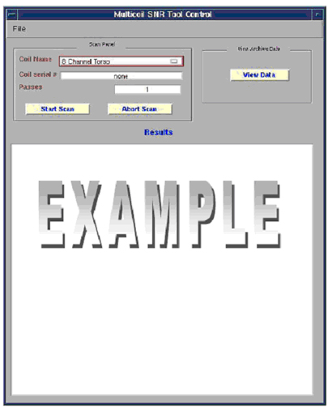
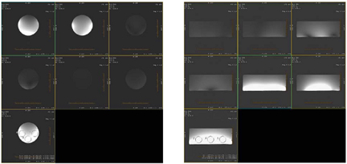
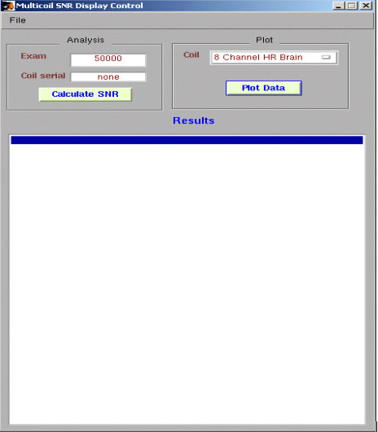
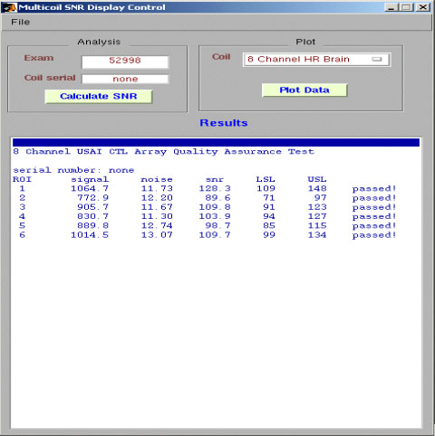

Operating Documentation
Direction 5670006, Rev# 1
Discovery MR750w GEM Service Methods
Module Version 2.0, Version Date 10/18/07
Operating Documentation |
| Required Persons | Preliminary Reqs | Procedure | Finalization |
|---|---|---|---|
| 1 | Not Applicable | 30 mins | Not Applicable |
This procedure is used for several coils. Open the Coil SNR tool as shown in Illustration 1, click on the square tab on the right side of the Coil selection to determine which coils are available to use with this tool.
| Last Update | 06/27/2007 |
Go to the Common Service Desktop -> [Image Quality] and select Coil SNR Test.
Select [Click here to start this tool].
Select method for calculating SNR.
Use the specific Coil Service manual to set up the coil and phantom for Landmark and Instructions. If the coil service manual also provides an SNR procedure, then follow that procedure. Otherwise continue with the following steps.
Select [file -> Help] then access the proper coil.
Select the coil type you want to run, then select [Start Scan]. See Illustration 1. This illustration shows an example using the 8 channel Torso coil.
Illustration 1: Coil SNR tool

After the test is complete, the tool will automatically extract and analyze the images
When the scan completes, the SNR data will be displayed in the Multicoil SNR Tool Control window. Each ROI returns an individual result with a pass or fail indication. See Illustration 2. The results are automatically recorded as files in /usr/g/service/data. Please refer to this directory for a history of functional tests performed on a specific system. The individual receiver images and composite image are saved in the system. The signals used to calculate SNR are taken from the composite image. Signal images are acquired using a SE sequence with CV saveinter set to 1 to save intermediate images into the image database.
Illustration 2: SNR Results

Illustration 3: Example Individual Receiver Images And Composite Image For CTL Coil

After reviewing the tabular SNR data, examine the stored individual element images visually to ensure that the elements are functioning properly. This gives added insurance that all elements are functioning normally. (It is possible that the composite SNR test can show a passing result even though an element can be faulty).
For most coils, a plot of the results will appear in a separate window. This also will display automatically. The Upper Spec and Lower Spec lines appear in red with the current test results shown in blue. See Illustration 4.
| NOTE: | The USL (Upper Spec Limit) can be ignored. This limit will be removed in future versions of EXCITE software. |
Illustration 4: SNR Plot

Optionally:
To view the most recent plot data again or previous results, click on view data. The following GUI will appear. See Illustration 5
Illustration 5: View Data

From this menu, select plot data and view SNR data from previous runs.
Select the run number from Data Plot Control GUI.
Click on Plot Data to get a graphic representation of the coil SNR. See Illustration 6.
To recalculate the most recent exam SNR results, enter the correct exam numer in the Exam Field under the Mulitcoil SNR display control GUI, then click the [Calculate SNR] button. SeeIllustration 6 and Illustration 7.
Illustration 6: SNR plot data
Illustration 7: SNR value data

No finalization steps.